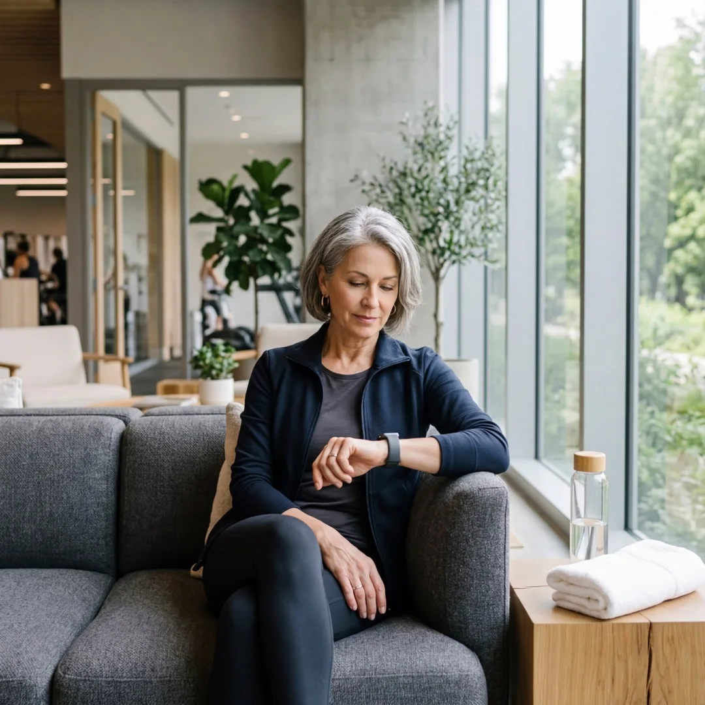
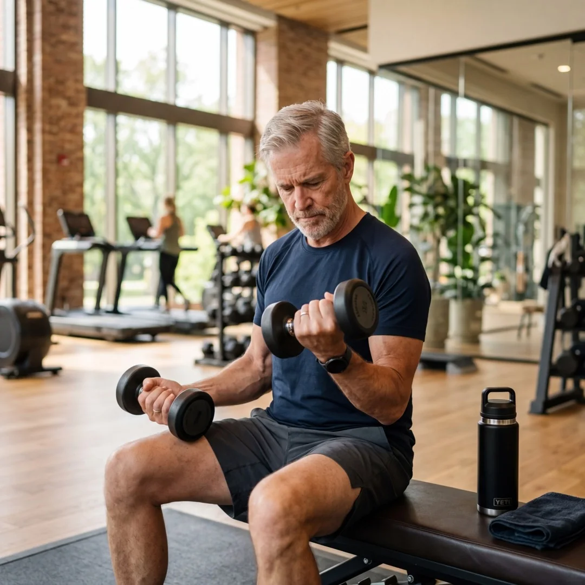
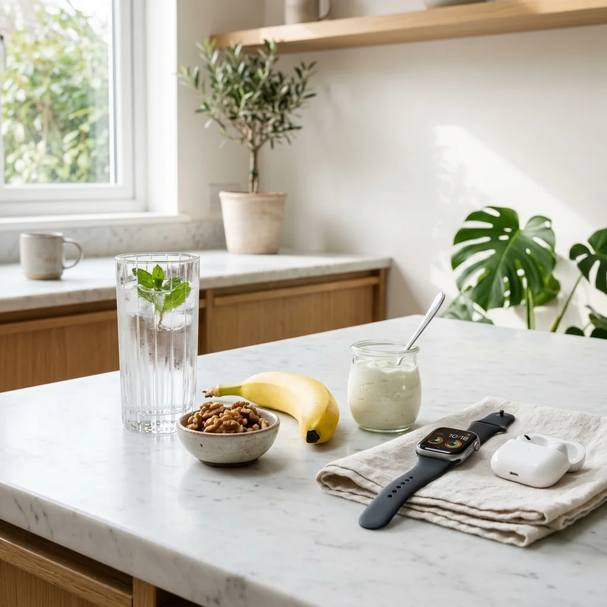

Słyszysz „pij 8 szklanek dziennie” od trzech dekad i nigdy nie wiedziałeś skąd ta liczba się wzięła. Ja Ci powiem: znikąd. To znaczy — nie ma żadnych badań naukowych które ją potwierdzają. Ale jest za to masa badań mówiących, że po 50-tce nawodnienie jest ważniejsze niż myślisz, działa inaczej niż u młodszych i może robić różnicę między dobrym treningiem a tym, po którym czujesz się jak zombie.
Szybka odpowiedź
Z wiekiem w ciele dzieje się kilka rzeczy związanych z wodą, o których nikt na siłowni nie rozmawia przy ekspresie do kawy.
Kluczowe wnioski
Kluczowe wnioski po 50-tce warto rozłożyć na praktyczne kroki i odnieść do codziennych decyzji. Takie podejście pomaga bezpiecznie działać, lepiej rozumieć sygnały z organizmu oraz wdrażać nawyki, które realnie poprawiają zdrowie i sprawność.
- Najważniejsze: Słyszysz „pij 8 szklanek dziennie” od trzech dekad i nigdy nie wiedziałeś skąd ta liczba się wzięła.
- W artykule znajdziesz konkrety o: Dlaczego po 50-tce woda działa inaczej — wyjaśnione prosto.
- Drugi kluczowy temat: Co się dzieje z ciałem, kiedy za mało pijesz podczas treningu.

Dlaczego po 50-tce woda działa inaczej — wyjaśnione prosto?
Dlaczego po 50-tce woda działa inaczej — wyjaśnione prosto po 50-tce warto rozłożyć na praktyczne kroki i odnieść do codziennych decyzji. Takie podejście pomaga bezpiecznie działać, lepiej rozumieć sygnały z organizmu oraz wdrażać nawyki, które realnie poprawiają zdrowie i sprawność.
Z wiekiem w ciele dzieje się kilka rzeczy związanych z wodą, o których nikt na siłowni nie rozmawia przy ekspresie do kawy.
Po pierwsze: spada ilość wody w ciele. Niemowlę to w 75% woda. Dorosły dwudziestolatek to około 60-65% wody. Dorosły po 60-tce to już tylko 50-55%. Masz dosłownie mniejszy zbiornik — i tym mniejszym zbiornikiem trzeba zarządzać mądrzej.
Po drugie — i to jest ważniejsze: mechanizm pragnienia się psuje.
U osób starszych próg osmotyczny wywołujący uczucie pragnienia jest wyższy niż u młodszych. Innymi słowy: mózg osoby po 50-tce reaguje na odwodnienie z opóźnieniem, nie sygnalizując pragnienia tak wcześnie jak powinien. Dosłownie: możesz być odwodniony i nie czuć pragnienia — a Twój mózg w tym czasie już „wie”, że brakuje wody, bo produkuje gorsze decyzje, wolniejsze myślenie i wyższe tętno podczas treningu.
Źródło: Madura P. et al. (2023). Hydration Status in Older Adults: Current Knowledge and Future Challenges.
Co się dzieje z ciałem, kiedy za mało pijesz podczas treningu?
Co się dzieje z ciałem, kiedy za mało pijesz podczas treningu po 50-tce warto rozłożyć na praktyczne kroki i odnieść do codziennych decyzji. Takie podejście pomaga bezpiecznie działać, lepiej rozumieć sygnały z organizmu oraz wdrażać nawyki, które realnie poprawiają zdrowie i sprawność.
Wyobraź sobie, że jedziesz samochodem z za mało oleju. Silnik działa. Na początek nawet dobrze. Ale każdy obrót zużywa się szybciej, trze się mocniej, temperatura rośnie. To jest Twój trening bez wody.
Kiedy tracisz zaledwie 2% masy ciała w postaci wody — a to zaledwie 1,4 litra dla osoby ważącej 70 kg — zaczyna się naprawdę dużo dziać:
- Siła mięśniowa spada o 2-6%. Nie czujesz tego wyraźnie, ale odkładasz ciężar szybciej niż powinieneś.
- Tętno rośnie przy tym samym wysiłku. Serce mówi: pomóż.
- Termoregulacja się psuje. Na siłowni jest cieplej niż myślisz — pocisz się bardziej niż zauważasz.
- Koncentracja spada. Bieżące decyzje stają się trudniejsze, czas reakcji dłuższy.
- Regeneracja po treningu jest gorsza — mięśnie bardziej bolą następnego dnia.
Utrata wody równa 2% masy ciała powoduje mierzalne pogorszenie funkcji kognitywnych — szybkości przetwarzania, uwagi i pamięci roboczej. U starszych dorosłych te efekty mogą pojawiać się wcześniej i być silniejsze ze względu na mniejszy całkowity zasób wody w organizmie.
Źródło: Hydration Strategies in Older Adults, Nutrients 2025.Woda a mózg — związek, który Cię zaskoczy
Woda a mózg — związek, który Cię zaskoczy po 50-tce warto rozłożyć na praktyczne kroki i odnieść do codziennych decyzji. Takie podejście pomaga bezpiecznie działać, lepiej rozumieć sygnały z organizmu oraz wdrażać nawyki, które realnie poprawiają zdrowie i sprawność.
To może brzmieć daleko od siłowni, ale słuchaj. Jest duże badanie z programu PREDIMED-Plus na prawie 2000 uczestnikach w średnim wieku 65 lat. Sprawdzano, czy nawodnienie wpływa na sprawność umysłową — pamięć, koncentrację, myślenie.
Czyli — nie tylko ćwiczyłeś słabiej. Myślałeś wolniej. I nie wiedziałeś o tym.
Test, który robiłeś milion razy i nigdy tak nie patrzyłeś
Test, który robiłeś milion razy i nigdy tak nie patrzyłeś po 50-tce warto rozłożyć na praktyczne kroki i odnieść do codziennych decyzji. Takie podejście pomaga bezpiecznie działać, lepiej rozumieć sygnały z organizmu oraz wdrażać nawyki, które realnie poprawiają zdrowie i sprawność.
Jest jeden bezpłatny, szybki i bardzo praktyczny test orientacyjny nawodnienia. Robisz go kilka razy dziennie. Wystarczy spojrzeć.
| Kolor moczu | Co to oznacza | Co zrobić |
|---|---|---|
| Słomkowy / jasnożółty | Idealnie nawodniony. Tak ma być. | Kontynuuj jak do tej pory. |
| Żółty / ciemnożółty | Lekkie odwodnienie. Uwaga. | Wypij 2-3 szklanki wody — teraz. |
| Bursztynowy / ciemnobrunatny | Poważne odwodnienie. | Zatrzymaj trening. Pij powoli, dużo. |
| Przezroczysty / bez koloru | Przesada. Za dużo wody. | Zmniejsz spożycie, zjedz coś z solą. |
Jeden rzut okiem przed treningiem i po treningu. To jest cała diagnostyka nawodnienia, którą masz za darmo. Nie potrzebujesz żadnych aplikacji ani urządzeń.
Ile pić — konkretnie, bez bajek?
Ile pić — konkretnie, bez bajek po 50-tce warto rozłożyć na praktyczne kroki i odnieść do codziennych decyzji. Takie podejście pomaga bezpiecznie działać, lepiej rozumieć sygnały z organizmu oraz wdrażać nawyki, które realnie poprawiają zdrowie i sprawność.
Zanim trening
Nawodnienie na trening buduje się wiele godzin wcześniej, nie 5 min przed. Badanie na osobach po 65-tce ćwiczących padla pokazało wyraźnie, że uczestnicy byli odwodnieni po treningu, mimo że pili odpowiednie ilości podczas ćwiczenia. Problem leżał w za małym nawodnieniu wieczorem i rano przed treningiem.
- Wieczorem przed dniem treningu: 500-750 ml wody (nie naraz, przez cały wieczór).
- Rano po przebudzeniu: 250-500 ml wody zaraz po wstaniu. To jest najważniejsza szklanka.
- 30 minut przed treningiem: jeszcze 250-500 ml.
Podczas treningu
Zasada jest prosta i oparta na badaniach: nie czekaj aż poczujesz pragnienie. Pij regularnie co 15-20 minut.
- Na siłowni o normalnej temperaturze: 150-250 ml co 15-20 minut.
- Przy intensywnym treningu: 250-300 ml co 15 minut.
- Osoby przyjmujące leki moczopędne (diuretyki): pij o 20-30% więcej niż Twoja norma.
Po treningu
Straty wody podczas treningu nie odrabiasz w pięć minut. Odrabiasz to przez kolejne 2-4 godziny.
- Metoda wagi: zważ się przed i po treningu. Każdy kilogram różnicy = litr wody do uzupełnienia.
- Pij powoli: 250 ml co 15-20 minut. Nerki po 50-tce mają mniejszą wydajność filtracyjną, nie „zalewaj się” naraz.
- Zjedz coś z elektrolitami: banan, naturalny jogurt albo bardziej słony posiłek mogą pomóc w lepszym uzupełnieniu płynów po treningu.
Co pić — zestawienie, które wszystkich zaskakuje?
Co pić — zestawienie, które wszystkich zaskakuje po 50-tce warto rozłożyć na praktyczne kroki i odnieść do codziennych decyzji. Takie podejście pomaga bezpiecznie działać, lepiej rozumieć sygnały z organizmu oraz wdrażać nawyki, które realnie poprawiają zdrowie i sprawność.
Nie tylko czysta woda się liczy. I nie wszystko co pite odwadnia.
| Napój | Nawadnia? | Uwagi |
|---|---|---|
| Woda (zwykła, gazowana) | TAK — doskonale | Gazowana działa tak samo jak niegazowana. |
| Kawa | TAK — tak | Nawadnia pomimo kofeiny. Efekt moczopędny jest minimalny. |
| Herbata (czarna, zielona) | TAK — tak | Równie dobrze jak woda. Ma korzystne polifenole. |
| Mleko i napoje mleczne | TAK — bardzo dobrze | Nawadnia lepiej niż woda ze względu na elektrolity. |
| Napoje izotoniczne | TAK — celowo | Przydatne tylko przy sesjach >60 minut lub bardzo intensywnych. |
| Soki owocowe 100% | TAK — częściowo | Zawierają dużo cukru. Rozcieńcz wodą 1:1. |
| Alkohol | NIE — odwadnia | Każde 10 g alkoholu powoduje utratę ok. 100 ml wody. |
| Napoje energetyczne | CZĘŚCIOWO | Dużo kofeiny i cukru. Po 50-tce nie rekomendowane. |
Wniosek: masz dużo więcej opcji niż sama woda. Te opcje naprawdę wliczają się do Twojego dziennego bilansu płynów.
Obalamy mity — czas posprzątać w głowie
Obalamy mity — czas posprzątać w głowie po 50-tce warto rozłożyć na praktyczne kroki i odnieść do codziennych decyzji. Takie podejście pomaga bezpiecznie działać, lepiej rozumieć sygnały z organizmu oraz wdrażać nawyki, które realnie poprawiają zdrowie i sprawność.
- MIT: Trzeba pić 8 szklanek wody dziennie.
FAKT: Ta liczba nie ma oparcia w nauce. Ilość płynów zależy od masy ciała, temperatury i diety. - MIT: Jeśli nie czuję pragnienia — jestem nawodniony.
FAKT: Po 50-tce pragnienie jest opóźnione. Jedynym wiarygodnym wskaźnikiem jest kolor moczu. - MIT: Kawa odwadnia, więc nie wlicza się w spożycie.
FAKT: Kawa nawadnia. Trzy kawy dziennie to około 750 ml wody które się wliczają. - MIT: Im więcej wody tym lepiej.
FAKT: Przesada to problem. Picie ponad 1,5 litra w godzinę może doprowadzić do hiponatremii.

Elektrolity — to słowo, które warto zrozumieć
Elektrolity — to słowo, które warto zrozumieć po 50-tce warto rozłożyć na praktyczne kroki i odnieść do codziennych decyzji. Takie podejście pomaga bezpiecznie działać, lepiej rozumieć sygnały z organizmu oraz wdrażać nawyki, które realnie poprawiają zdrowie i sprawność.
Elektrolity to sole mineralne: sód, potas, magnez, wapń. Prowadzą sygnały między mięśniami a mózgiem i regulują poziom wody w komórkach.
Po 50-tce elektrolity stają się ważniejsze, bo wiele leków (na ciśnienie, serce) zaburza ich gospodarkę. Magnez i potas to dwa elementy, których najczęściej brakuje. Niedobory magnezu to skurcze i zmęczenie, niedobory potasu — słabość mięśni i kłopoty z sercem.
Kiedy intensywnie się pocisz, tracisz wodę z elektrolitami. Dlatego po długim treningu samą wodą możesz się nawodnić niedostatecznie — zjedz coś sodowo-potasowego (banan, ziemniaki, orzechy).
Podsumowanie — sześć zasad na karteczkę
Podsumowanie — sześć zasad na karteczkę po 50-tce warto rozłożyć na praktyczne kroki i odnieść do codziennych decyzji. Takie podejście pomaga bezpiecznie działać, lepiej rozumieć sygnały z organizmu oraz wdrażać nawyki, które realnie poprawiają zdrowie i sprawność.
- Zignoruj pragnienie jako jedyny wskaźnik. Po 50-tce ten czujnik jest za wolny.
- Patrz na kolor moczu — jasnożółty to Twój cel.
- Pij rano, pij wieczorem — nawadnianie to proces 24-godzinny.
- Kawa i herbata się wliczają. Alkohol realnie odwadnia.
- Izotoniki tylko przy bardzo długich lub morderczych sesjach.
- Jeśli bierzesz leki na ciśnienie — porozmawiaj z lekarzem o nawodnieniu.
Źródła
Źródła po 50-tce warto rozłożyć na praktyczne kroki i odnieść do codziennych decyzji. Takie podejście pomaga bezpiecznie działać, lepiej rozumieć sygnały z organizmu oraz wdrażać nawyki, które realnie poprawiają zdrowie i sprawność.
| [1] | Madura P. et al. (2023). Hydration Status in Older Adults. Nutrients, 15(12). PMC10255140. |
| [2] | Hydration Strategies in Older Adults — A Narrative Review. Nutrients 2025, 17(14), 2256. PMC12300510. |
| [3] | Water intake, hydration status and 2-year changes in cognitive performance: a prospective cohort study (PREDIMED-Plus). PMC9993798. |
| [4] | Fluid Intake Recommendation Considering Physiological Adaptations of Adults Over 65 Years: A Critical Review. PMC7694182. |
| [5] | West Virginia University School of Medicine — Mythbusting: Hydration (Harvard / UCSF review). WVU. |
| [6] | National Council on Aging (NCOA). How to Stay Hydrated for Better Health. NCOA. |
FAQ
FAQ po 50-tce warto rozłożyć na praktyczne kroki i odnieść do codziennych decyzji. Takie podejście pomaga bezpiecznie działać, lepiej rozumieć sygnały z organizmu oraz wdrażać nawyki, które realnie poprawiają zdrowie i sprawność.
Ile wody pić dziennie po 50, gdy trenuję?
To zależy od masy ciała, temperatury i potliwości, ale zwykle potrzeby rosną wraz z wysiłkiem. Najpraktyczniej kontrolować kolor moczu i masę ciała po treningu.
Czy podczas treningu po 50 lepsza jest woda czy izotonik?
Przy krótszym, umiarkowanym wysiłku zwykle wystarcza woda. Izotonik częściej przydaje się przy dłuższych i bardziej intensywnych sesjach z dużą potliwością.
Po czym poznać odwodnienie podczas ćwiczeń?
Typowe sygnały to suchość w ustach, ból głowy, spadek mocy, zawroty i ciemniejszy mocz. Warto reagować wcześnie, zanim wydolność wyraźnie spadnie.
Jak wdrożyć to po 50-tce krok po kroku?
Zacznij spokojnie: wybierz jeden mały krok na ten tydzień, obserwuj reakcję organizmu i dopiero potem dokładaj kolejne elementy. Najlepsze efekty daje regularność, a nie tempo. Jeśli masz choroby przewlekłe lub dolegliwości bólowe, skonsultuj plan ze specjalistą.
Duża garść wiedzy podana prosto, konkretnie i po ludzku.

Dieta keto a cholesterol: co naprawdę mówi najnowsza nauka – rzetelnie, bez marketingu
Czy keto podnosi zły cholesterol? Poznaj wyniki metaanalizy 2024, fenomen LMHR, co dzieje się z trójglicerydami i HDL, dlaczego wyglądasz świetnie – i jakie są realne zagrożenia po 50-tce.
Czytaj artykuł ->
Dieta po 50-tce kontra nawyki. Czemu diety nie działają i co naprawdę zmienia życie
Dieta po 50-tce nie działa na długo? Sprawdź, czemu restrykcje przegrywają z nawykami i jak jeść lepiej bez efektu jojo.
Czytaj artykuł ->
Jedz więcej. Dlaczego niedojadanie po 50-tce niszczy efekty treningu szybciej niż lenistwo.
Dowiedz się, dlaczego ograniczanie jedzenia przy treningu po 50-tce to błąd. Poznaj naukowe dowody na to, że niedojadanie niszczy mięśnie i metabolizm.
Czytaj artykuł ->